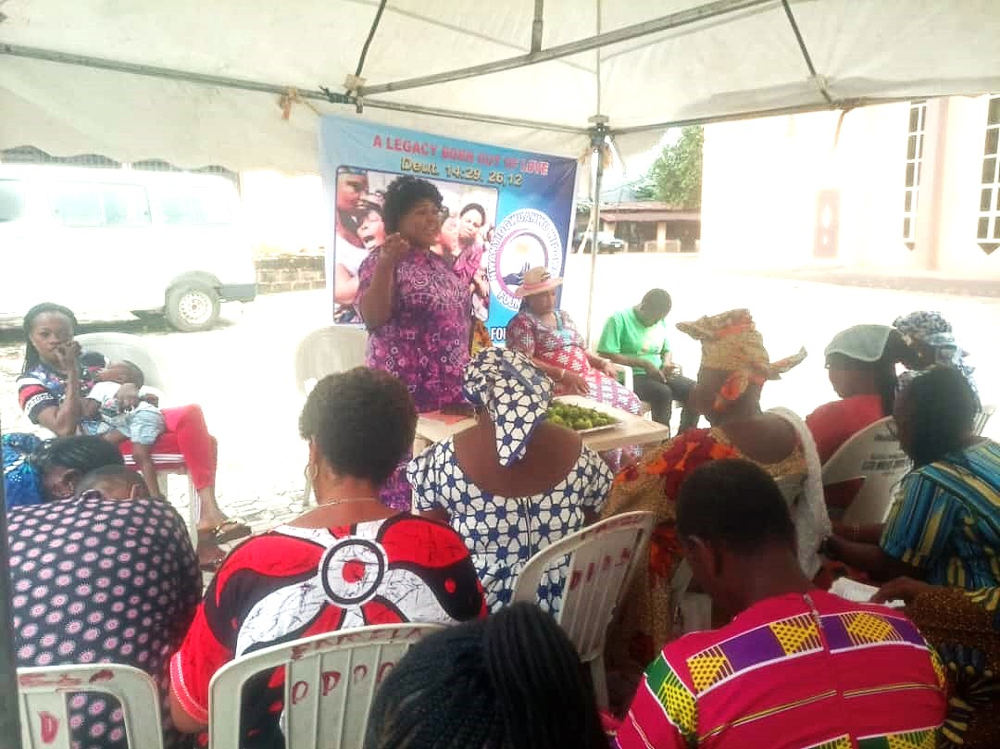

Counseling
Grief can be overwhelming, but no widow should go through it alone. Our Counseling services offer individual and group therapy sessions designed to provide emotional support and healing.
With licensed counselors and trained peer supporters, we help widows process grief, rebuild self-confidence, and find renewed strength. Healing begins when hearts are heard and stories are shared.
← Back to Services